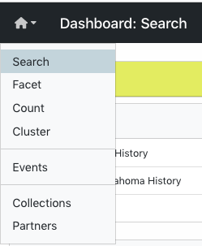
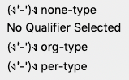

Quality Control in Metadata
Introduction
Metadata in the UNT Libraries’ Digital Collections is always being updated, corrected, and enhanced as needed or when new information becomes available. To aid in identifying areas where records may need review or adjustments (e.g., typos, missing information, etc.), a number of tools and features have been built into the interface.
Editing tools are accessible to anyone with an account to edit in the Digital Collections using the menu in the upper-left corner.
Information on this page provides general explanations about functions that work the same across all of the individual tools. The other pages in this set describe features and example quality control usage that are specific to each tool.
About the Tools
As a general rule, the tools cannot tell editors when something is “wrong,” but they reorganize information to help editors see outliers or values that do not match what is expected for the selected criteria
Data values are compared across the system, but can be limited to specific critera (e.g., a resource type or collection) using the filters on the left side of the screen
All tools provide information based on a field or field-qualifier combination
The qualifier drop-down menu is only active if a qualified field is chosen and can be left blank or used in various ways:
A field only (no qualifier option chosen) to include entries with any qualifiers, or non-qualified
Field values with missing qualifiers (i.e., “No Qualifier Selected”)
A field with a specific qualifier (e.g., creators labeled “author” or subjects labeled “UNTL-BS”)
Note that creator and contributor have two options: the role (main qualifier) and the type, listed at the bottom of the list as per-type (personal name) and org-type (organizational name)
|
 |
Tool Features
Some options and features apply to all of the tools
After selecting a field, there are options to copy or link to the records that contain a value/count by clicking the arrow next to the value
Clicking at the end of the line temporarily highlights the line (clicking multiple times will cycle through 4 color options); the highlighting does not “stick” if the link is shared or if the page is reloaded